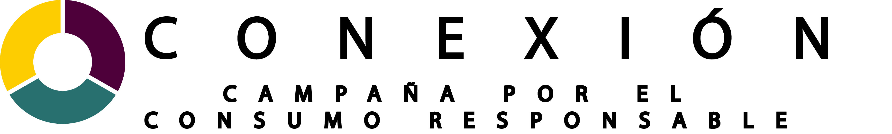
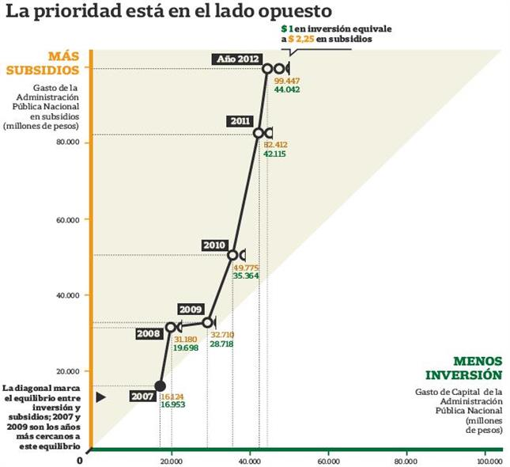
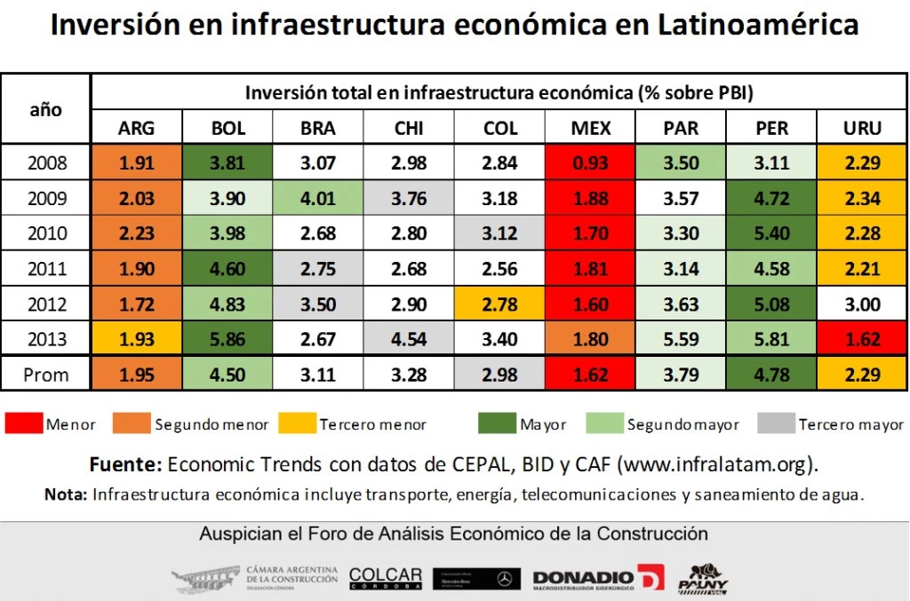
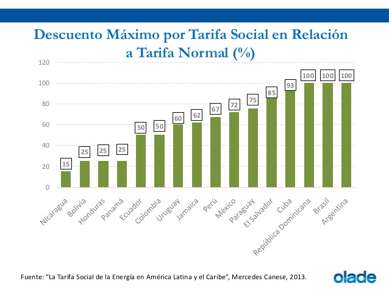
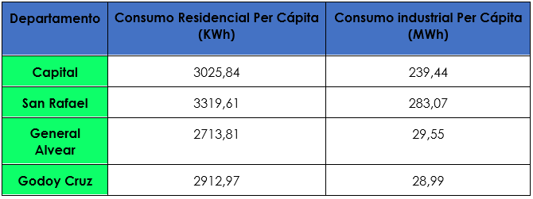
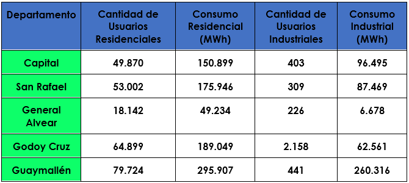
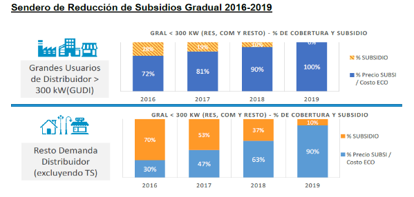

 +2604 - 394600
+2604 - 394600
+2604 - 394600
+2604 - 394600
Falta de Inversión y Mantenimiento
Cuando no se invierte en infraestructura nos encontramos frete a un problema, ya que es imposible cambiar equipos o realizar el mantenimiento. Estos diversos equipos están diseñados para soportar ciertas demandas (amperaje) y cantidad de años, si no son reemplazados a tiempo pueden estropearse o llegar a generar un corto circuito. Otro aspecto es que el sector industrial no puede prosperar en producción y en especial las Pymes, de esta manera no favorece a la inversión nacional, ya que son empresas que no dependen del estado. El acceso a un adecuado suministro de energía eléctrica, independientemente de las fluctuaciones de la demanda de energía, es uno de los aspectos clave para las empresas, ya que se trata de uno de los principales insumos junto con los bienes intermedios. Durante el año analizado, el 82,7% de las pyme industriales sufrió cortes de electricidad con una duración mayor a los 30 minutos.
Gráficas Ilustrativas


Noticias
Sobreconsumo y Subsidios
Cuando no se invierte en infraestructura es un problema ya que es imposible cambiar equipos o realizar el mantenimiento. Estos diversos equipos están diseñados para soportar ciertas demandas (amperaje) y cantidad de años, si no son reemplazados a tiempo pueden estropearse o llegar a generar un corto circuito.
Gráficas Ilustrativas



Noticias
Inversión y mantenimiento
>A la hora de invertir, el Estado debe buscar o elaborar proyectos que traten de buscar eficiencia y economía a las infraestructuras y que tengan una proyección hacia el futuro, administrar los fondos honestamente, y además evaluar y capacitar al personal que ejerce el trabajo para que haya competitividad y disciplina, evitando así una deficiencia institucional, para luego salir a la competencia internacional. También el Estado debe regular los subsidios y dárselos sólo a las personas que lo necesitan. Una posible solución a la falta de mantenimiento es aplicar dos tipos de mantenimientos: correctivo y preventivo.
Noticias
Sobre consumo y subsidios
La manera de evitar este problema es concientizar a la población sobre el consumo eléctrico. Un posible camino podría ser reducir los subsidios a la población que ya cumple las necesidades básicas, abocando así su atención al ahorro de energía eléctrica.
Gráficas Ilustrativas

Noticias